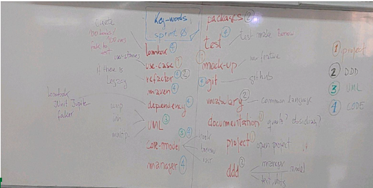

Febraury 2023
Class 1/02/2023: LibraryProject: define priorities and code test

📘 Linux Lab#SE03-2: Library/Book Sprint Zero
Before define what a Sprint Zero really is, let’s see what it isn’t.
- A Sprint Zero is not the phase in which the team is put together. In order to conduct a Sprint in the first place, a team must already be in place.
- A Sprint Zero is not the phase for setting up infrastructure which should already be implemented or easily implemented on demand, but not as part of a Sprint Zero.
- A Sprint Zero should not involve adding products to a backlog or Consider Planning.
The main goal of a Sprint Zero is to deliver some usable value that can be built upon by the next team. Sprint Zeros are required to:
- Create the project’s skeleton, including research spikes.
- Keep design minimal.ep design minimal
- Develop a small number of stories to completion.
- Be low velocity and lightweight.
More specifically, the deliverables of a Sprint Zero should be as follows:
- A usable piece of code, however small.
- A *+minimal** environment for writing code.
- A prioritization of features or a list of stories.
- A release plan assigning each story to a Sprint.
- A plan for the most likely implementation of features.
Sprint Zero: mock-up
Options:
1- Make a Borrow
2- User Management
3- Book Management
4- Quit
Option?
'Borrow'
User?
'159742OPI'
Book?
'Anna Karenina'
Proceed, are your sure?
'Yes'
Borrow made, borrowId: RER7567, dueDate: 15/02/2023
Options:
1- Make a Borrow
2- User Management
3- Book Management
4- Quit
Option?
'Quit'Random ID’s
Calss UUID creates id with 128 bit value
Public static String = createID(){
UUID uuid = UUID.randomUUID();
String id = uuid.toString();
return id;
}Class 2/02/2023: Quarto: using API Rest with D3.js
Implementar dentro de quarto el ejercicio o entrada observable (Quarto Markdown: code & data)
Rest tipo de arquitectura para hacer webs
REST (Representational State Transfer)
Rest is an architectural style for building web services.
It is based on a client-server model, where a client sends a request to a server and the server sends a response.
RESTful APIs use HTTP requests to POST (create), PUT (update), GET (read), and DELETE (delete) data.
A RESTful API is a simple, consistent, and easy-to-use way for applications to communicate with each other over the internet.
Ventajas apirest bien para volumen y complejidad pero no para tiempo real, usariamos en el ultimo caso websocket
Class 03/02/2023: SCRUM, Vocabulary, Four-Hats & Devops CIFO
- SCRUM: delete (step 2 spaceX)
- Vocabulary
- Four-Hats: Project/DDD/UML/code
- Cifo Java AppWeb Service Infrastructure: servers, services, network, URL
Class 08/02/2023: JavaSE Laboratory
El viernes haremos introducción a spring añadiendo unas 5 dependencias mas ademas de Faker, Lombook y Junit
Hoy continuamos con el laboratorio del día 01/02/2023
Transformar en tabla:
(1st Column)Spring Backlog:
CODE
UMl
PROJECT
DOMAIN
- (Code) TestBorrow x
- (UML) UML Manager
- (UML) UMLCore
- (Project) Use Case
- (Project) MockUp
- (Project) Documentation
- (Domains) Common Language
- (Code) BookManager x
- (Code) BorrowManager x
- (Code) UserManager x
- (Code) AuthorManager x
- (Code) Fakers x
- (Code) Refactor UserInterface x
- (Domain) Define userId (UUID)
- (Project) Bussiness Model
- (Project) Git Tech
- (Project) Git Documentation
- (Project) Git Roles
- (Code) Git INIT x
- (Project & UML) Functional Diagramm
- (Poject) Storage
- (Project) Sprint Goal
- (Project) The concept of done
- (Project) Release Plan
- (Code) Sandbox x
(2st To-do)Spring Backlog:
(3st Doing)Spring Backlog:
(4st Done)Spring Backlog:
| Spring Backlog | To-do | Doing | Done |
|---|---|---|---|
| TestBorrow | ### | ### | ### |
| BookManager | ### | ### | ### |
| BorrowManager | ### | ### | ### |
| UserManager | ### | ### | ### |
| AuthorManager | ### | ### | ### |
| Fakers | ### | ### | ### |
| Refactor UserInterface | ### | ### | ### |
| Git INIT | ### | ### | ### |
| Sandbox | ### | ### | ### |
Class 09/02/2023: JavaSE Laboratory
Class 10/02/2023:
Wraper Optional ejemplo y explicación
java.util.Optional es una clase que se introdujo en Java 8 y se utiliza para representar valores opcionales. Anteriormente, para representar valores que pueden o no estar presentes, se utilizaba null, lo que a menudo resultaba en errores de NullPointerException. Con Optional, puedes representar valores opcionales de una manera más segura y fácil de manejar.
Optional es un contenedor que puede o no tener un valor dentro. Si un Optional contiene un valor, se dice que está “presente”, de lo contrario, se dice que está “vacío”. Puedes usar métodos como of() o ofNullable() para crear un Optional con un valor dentro, y empty() para crear un Optional vacío.
Una de las principales ventajas de usar Optional es que te permite manejar el caso en el que un valor puede no estar presente de manera más clara y legible. Por ejemplo, puedes usar el método orElse() para proporcionar un valor por defecto si el Optional está vacío, o el método orElseGet() para proporcionar un valor por defecto a través de un proveedor.
En resumen, java.util.Optional es una clase que puede ayudarte a escribir código más seguro y legible al trabajar con valores opcionales en Java.
import java.util.Optional;
public class OptionalExample {
public static void main(String[] args) {
// Crear un Optional vacío
Optional empty = Optional.empty();
System.out.println("Empty Optional: " + empty);
// Crear un Optional con un valor
Optional value = Optional.of("Value");
System.out.println("Optional with value: " + value);
// Crear un Optional a partir de un valor que puede ser nulo
String nullValue = null;
Optional optionalNull = Optional.ofNullable(nullValue);
System.out.println("Optional from null value: " + optionalNull);
// Obtener el valor dentro de un Optional
String val = value.get();
System.out.println("Value inside Optional: " + val);
// Probar si un Optional está presente
boolean isPresent = value.isPresent();
System.out.println("Is value present? " + isPresent);
// Proporcionar un valor por defecto si un Optional está vacío
String defaultValue = empty.orElse("Default Value");
System.out.println("Value from empty Optional with default: " + defaultValue);
}
}
El resultado de ejecutar este código sería:
Empty Optional: Optional.empty
Optional with value: Optional[Value]
Optional from null value: Optional.empty
Value inside Optional: Value
Is value present? true
Value from empty Optional with default: Default ValueInterfaces
Solemos empezar por lo concreto e ir a lo general, no obstante es conveniente entender que la programacion tiene que ser vista como el uso de entidades más abstractas con funcionalidades que pueden variar dependiendo del scope.
In Java, an interface is a blueprint for classes. It specifies a set of methods that a class must implement, but it does not provide any implementation for these methods. An interface is defined using the interface keyword, and it can contain method signatures (declarations), constant variables, and default methods (methods with a default implementation).
Here’s an example of an interface in Java:
In this example, the Shape interface defines two methods calculateArea and calculatePerimeter that any class that implements this interface must provide an implementation for. The interface also defines a constant PI that can be used by any class that implements this interface.
A class that implements an interface must provide an implementation for all of the methods declared in the interface. Here’s an example of a class that implements the Shape interface:
public class Circle implements Shape {
private double radius;
public Circle(double radius) {
this.radius = radius;
}
@Override
public double calculateArea() {
return PI * radius * radius;
}
@Override
public double calculatePerimeter() {
return 2 * PI * radius;
}
}In this example, the Circle class implements the Shape interface and provides implementations for the calculateArea and calculatePerimeter methods. The Circle class can now be used wherever a Shape is expected. This allows for a degree of polymorphism and code reuse, as the specific type of Shape being used can be changed at runtime, as long as it implements the Shape interface.
Here’s an example of using an interface in Java:
Javapublic interface Shape {
double PI = 3.14;
double calculateArea();
double calculatePerimeter();
}
public class Circle implements Shape {
private double radius;
public Circle(double radius) {
this.radius = radius;
}
@Override
public double calculateArea() {
return PI * radius * radius;
}
@Override
public double calculatePerimeter() {
return 2 * PI * radius;
}
}
public class Main {
public static void main(String[] args) {
Shape shape = new Circle(5.0);
System.out.println("Area of the circle: " + shape.calculateArea());
System.out.println("Perimeter of the circle: " + shape.calculatePerimeter());
}
}In this example, we first define the Shape interface with two methods calculateArea and calculatePerimeter. Then, we create a class Circle that implements the Shape interface and provides implementations for the methods defined in the interface. Finally, in the Main class, we create an object of the Circle class and use it as if it were an object of the Shape interface.
You can also have multiple classes implementing the same interface, and you can use them interchangeably as long as they are referenced as objects of the interface type.
We need an random ID for all the objects that requires it.